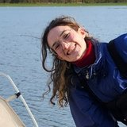

Current PhD students & post-docs
LG
Lucien GayotPhDNew
The expansion of the European beaver in France: how to model its distribution and its dams to better understand and anticipate its consequences? (2026–2029)

Anastasia PaupePhD
Distribution of aquatic insects in landscapes: towards a regional approach to ecosystem services for agriculture in Brittany (2025–2028)
Lou ChartrainPhD
The location of solar installations faced with conflicting legal requirements - The example of solar panel installations along roads (2025–2028)

Valentin CabonPost-doc
Development of a multi-parameter indicator of the impact of ground-mounted solar power plants (2025–2026)
All supervisions
In progress
- 2026–2029Lucien GayotThe expansion of the European beaver in France: how to model its distribution and its dams to better understand and anticipate its consequences?
- 2025–2028Anastasia PaupeDistribution of aquatic insects in landscapes: towards a regional approach to ecosystem services for agriculture in Brittany
- 2025–2028Lou ChartrainThe location of solar installations faced with conflicting legal requirements - The example of solar panel installations along roads
Defended
- 2023–2026 · defendedLéo BroudicFrom landscape ecology to land-use planning: towards integrated management of Réunion's coral reefs
- 2022–2025Eugène MaureyInfluence of spatial heterogeneities on soil macroinvertebrate communities in an agricultural landscape
- 2021–2024Valentin CabonEffects of microclimatic variability on urban wildlife in the context of climate change
- 2019–2022Rémi GerberLandscape effects on dispersal of aquatic insects across stream-land interface
- 2018–2021Gbenga OmoniyiFunctional responses of stream macroinvertebrate communities to hydromorphological restoration
- 2016–2019Alice Meyer-GrandbastienEcological and sociological perception of greenways in urban areas
In progress
- 2025–2026Valentin CabonDevelopment of a multi-parameter indicator of the impact of ground-mounted solar power plants
Completed
- 2024–2025Nadège BélouardPredator-prey interactions between spiders and emerging aquatic insects in agroecosystems in western France
- 2023–2024Camille LeclercEffects of environmental conditions on the topology of food webs in the channels of a retro-littoral marsh (Marais poitevin)
- 2020–2023Julie CrabotAnalysis of the spatio-temporal variability of marsh communities
- 2017–2020André MauchampImpact of hydrological conditions on biodiversity patterns in drainage ditches
Engineers
- 2024Laura PellanImplementation of ANR STRANGE biodiversity monitoring protocols
- 2019Pierre-Gilles LemasleDevelopment of spatio-temporal scale selection models
- 2012Ghislain N’Kadji-TchangoConservation and prioritization of the grayling (Thymallus thymallus)
Master students
- 2027Anouk Saint-JalmesMetabarcoding monitoring of aquatic biodiversity and wetland functioning
- 2027Salomé OudotSetting up an aquatic monitoring network in Brittany
- 2026Allan ChauviereAquatic biodiversity and wetland functioning
- 2026Nathan BizouardCitizen science to characterise earthworm communities and to preserve the urban soil ecosystem
- 2026Lucien GayotModelling the expansion dynamics of the European beaver (Castor fiber) in France
- 2024Sariaka RamialisonDevelopment of biodiversity indicators for the national PROPAGE database (PRotocole PApillons GEstionnaires)
- 2024Phybie GarciaMonitoring benthic invertebrate communities along a gradient of agricultural anthropization
- 2023Sarah CarpentierStudies of spider communities using GVAC in urban environments
- 2022Nitya TriveillotAnalysis of spider mobility according to soil complexity in an urban heat island context
- 2022Maud LaunoyAnalysis of arthropod thermopreferences in an urban heat island context
- 2022Camille MorgaintTo what extent are urban fauna populations able to adapt to urban heat islands? Evaluation of the behavioral and physiological plasticity of species from three groups (aphids, carabid beetles, and butterflies)
- 2021Lilian CabonCharacterization of the energy used by aquatic insects according to their dispersal strategies
- 2021Bastien FiaschiComparative analysis of plant communities and pollens in Armorican bocage landscapes
- 2019Justine RoyerSpatial and temporal variations of butterfly populations in Ille et Vilaine, France
- 2019Pierre-Gilles LemasleFrom threshold to weigthed-distance method, a new landscape ecology multi-scales approach using remote-sensed LiDAR data
- 2018Bastien BlancLinking biometric and physiological measurements to explain the dispersal strategies of aquatic insects
- 2018Marie GrangeImpact of hydrological conditions on biodiversity patterns in drainage ditches
- 2018Mélanie TernisienLong term monitoring in urban areas and consequences for butterflies
- 2017Déborah WolfDevelopment of a spatially and temporal IBM (Individual Based Model) of carabids
- 2017Clémentine Le ChampionTemporal evolution of Carabid communities in woodland areas
- 2013Irène NègreDevelopment of a prioritization index for the European grayling (Thymallus thymallus) in Switzerland
- 2010Antoine MorelMeadow richness impacts on wild pollinators in urban areas
- 2009Audrey CoulonPieris brassicae breeding behaviour in urban context
Bachelor students
- 2027Boréale Bornet PautretIdentification of aquatic insects from the TREIZH project
- 2023Louis CopinDevelopment of a protocol for the determination of morphological characteristics of spiders
- 2023Benoit DelettreAnalysis of morphological adaptations of spiders in urban heat island context
- 2022Brendan BlanchardAnalysis of spider mobility in an urban heat island context
- 2013Rado Etienne RasolofoniainaArthropod impacts on organic vineyards in Canton du Valais, Switzerland
- 2009Leyli BornerDispersal range of Pieris brassicae in urban parks
- 2008Livio CasellaMark-Release-Recapture experiment on Pararge aegeria in urban parks